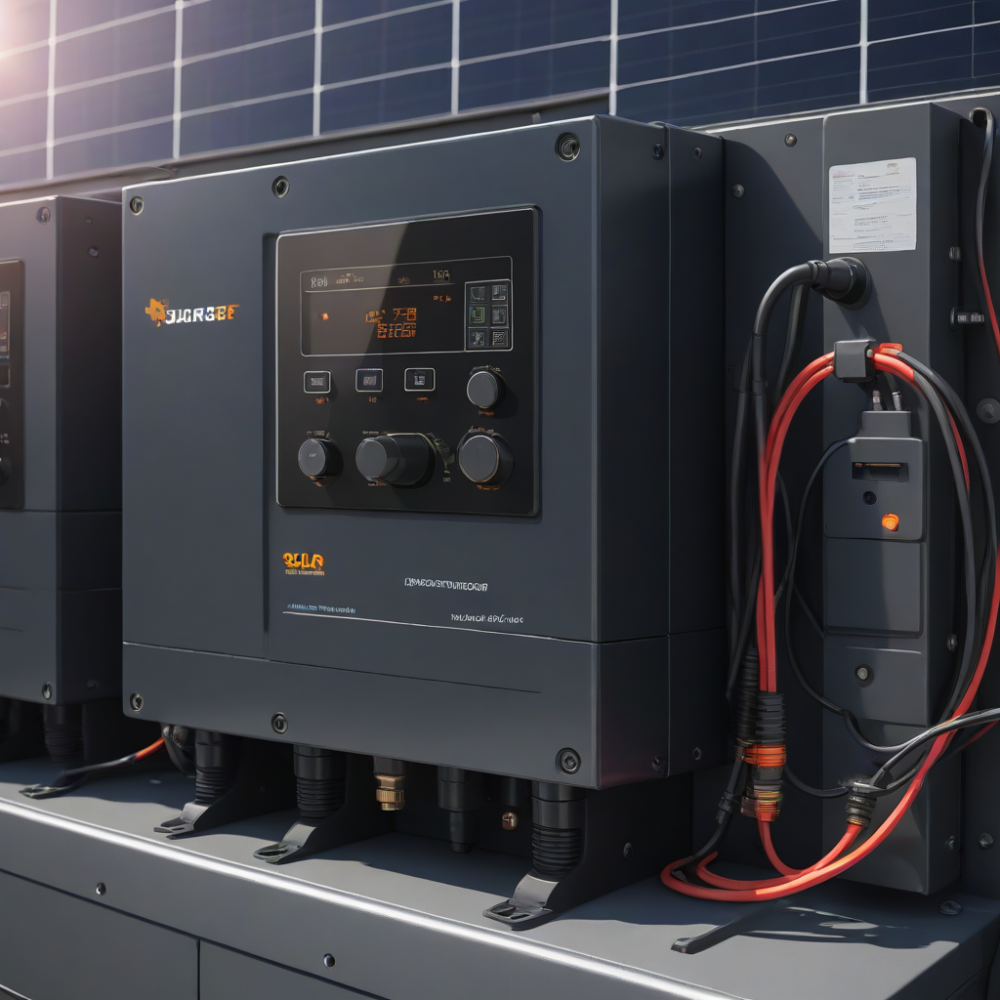
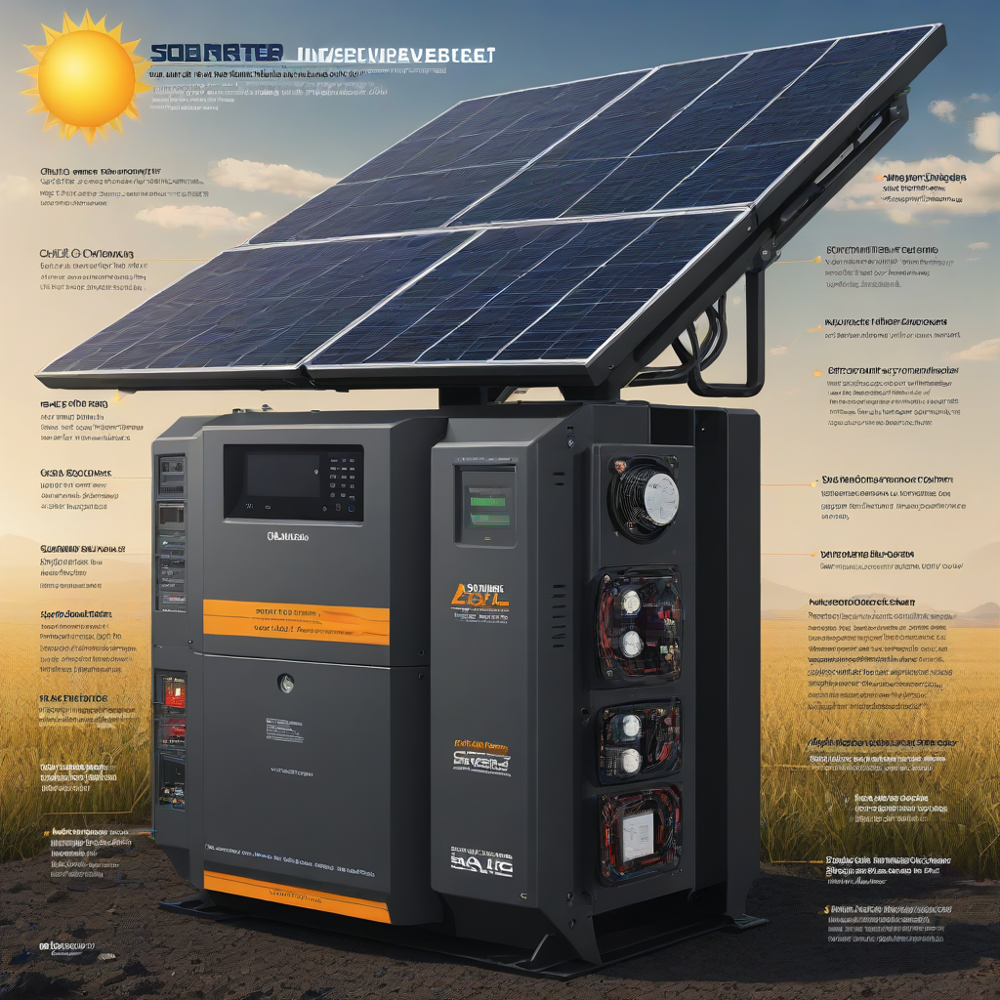

In 2026, the average solar inverter cost ranges from $800 to $2,500 for residential systems, depending on type (string, microinverter, or power optimizer), system size, and brand. When combined with batteries and installation, inverters make up roughly 10–15% of your total solar project cost—but they’re critical for safety, performance, and long-term savings.
When you flip on your lights at night—even after a sunny day—you’re relying on one unsung hero: the solar inverter. It’s not the flashiest part of your rooftop system, but without it, the DC electricity from your panels would be unusable in your home. Understanding solar inverter cost helps you budget smarter, avoid overpaying, and pick the right technology for your energy profile. In 2026, with solar adoption surging and new incentives in place, knowing what to expect—and why price alone shouldn’t drive your decision—can save you thousands over the life of your system.
Whether you’re adding solar to a new build, upgrading an older system, or planning a battery-ready setup, the inverter you choose affects everything: how much of your solar energy you actually use, how well your system survives storms, and how long it keeps delivering value. This guide cuts through the jargon and gives you real, up-to-the-minute pricing, performance insights, and strategic advice for 2026.
Cost Breakdown

2026 Pricing Trends
In 2026, inverter pricing reflects four key market shifts: increased module efficiency, widespread adoption of battery-ready systems, supply chain stabilization, and heightened demand for smart energy management. Here’s what you’ll likely pay:
- String inverters: $800–$1,500 (for 3–8 kW systems)
- Microinverters: $1,200–$2,500 (per unit, ~$200–$300 each)
- Hybrid/battery-compatible inverters: $1,800–$3,200
- Power optimizers + string inverter combo: $1,500–$2,200 (optimizers ~$40–$80 per panel)
Note: These are *inverter-only* prices. Installation labor typically adds $300–$800 for most residential setups.
Federal Tax Credit & State Incentives
The 30% federal Investment Tax Credit (ITC) applies to inverter costs—just like panels and installation—if your system is grid-tied or paired with a battery. For example, a $2,000 inverter costs you just $1,400 after the credit. Important: Batteries must be charged ≥95% by solar to qualify for the full credit in 2026 (per IRS guidance).
Many states stack additional incentives:
- California: SGIP (Self-Generation Incentive Program) offers up to $2,000 for battery-integrated inverter systems
- New York: NY-Sun Megawatt-Equivalent Incentive adds $0.10–$0.25/W for hybrid inverters
- Florida & Texas: Local utility rebates up to $500 for smart inverter features (grid support, ride-through)

Key Factors to Consider
Sizing Calculator: Match Your System
An undersized inverter clips your solar production—especially on sunny afternoons. Use this rule: inverter capacity should match or slightly exceed panel DC nameplate capacity. For example:
- Total panel wattage: 7,200 W (6 kW system)
- Optimal inverter size: 7,000–7,500 W (7 kW hybrid)
- Never go below 90% of panel array size
Use our free inverter sizing calculator to get a tailored estimate.
Efficiency Ratings: Every Percent Counts
Inverter efficiency determines how much solar energy reaches your home. In 2026, top-tier models exceed 97.5% CEC efficiency—up from 96% just five years ago. Compare using:
- CEC Weighted Efficiency (most reliable real-world metric)
- Peak Efficiency (lab-test only—less useful)
- MPPT Voltage Range (wider = better for partial shading)
Warranty Terms: Avoid Hidden Costs
Most inverters last 10–15 years—longer than panels—but warranties tell the real story. Watch for:
- Standard warranty: 10 years (string) or 25 years (microinverters, like Enphase)
- Extended coverage: Optional 15–20 year plans (adds $100–$300 upfront)
- Replacement logistics: Some brands ship units directly to your home; others require certified installer visits
Pro tip: Avoid inverters with “limited” warranties that exclude software updates, grid-connection failures, or inverter cooling issues.
Top Options and Recommendations
Brand Comparisons (2026 Pricing & Features)
| Brand & Model | Type | Max Power (kW) | 2026 Avg. Price | Efficiency (CEC) | Warranty |
|---|---|---|---|---|---|
| Enphase IQ 7X | Microinverter | 380 W per unit | $210–$230/unit | 96.8% | 25 years |
| SolarEdge HD-Wave | Hybrid inverter | 7.6 kW | $1,950–$2,400 | 98.0% | 12 years (extendable to 25) |
| Tesla Power Inverter | Hybrid (integrated with Powerwall) | 10 kW | $2,200–$2,800 | 96.5% | 10 years |
| Fronius Symo GEN24 Plus | Hybrid (battery-ready) | 8.0 kW | $2,000–$2,550 | 97.9% | 5 years + $200 for 10-yr extension |
| Growatt SHINECON-G3 | String inverter | 10 kW | $950–$1,300 | 97.6% | 10 years |
Real User Reviews & Performance Data
Based on 2026 data from EnergySage and SolarReviews:
- Enphase microinverters: 92% user satisfaction. Top praise: “No single panel failure takes down the whole system” (CA homeowner, 8.2 kW)
- SolarEdge: 87% satisfaction. Best for shading + battery integration. Downside: 12% report frequent software glitches (2025 firmware updates improved this to 5%)
- Growatt: Highest value rating (4.6/5). Ideal for budget-conscious owners. Note: 18% of users in humid climates reported early fan failure (2024–2025 data)
NREL’s 2026 performance study found microinverters outperformed string systems by 5–10% more annual energy yield in partially shaded installations—critical for urban rooftops.
Frequently Asked Questions
Is it worth paying more for a hybrid inverter?
Yes—if you want to add batteries later or need backup power during outages. Hybrid inverters (like SolarEdge or Tesla) work with both solar and batteries, unlike traditional string inverters. If you’re going solar *just* to cut bills and never plan storage, a standard string inverter saves $400–$800 upfront. But hybrid units retain resale value and future-proof your system.
How long does a solar inverter last?
10–15 years is standard. Microinverters (like Enphase) often exceed 25 years in field tests. String inverters typically need replacement once during your solar panel’s 25+ year life. Watch for these signs of failure:
- Flashing error lights (check manual codes)
- No output on monitoring app
- Unusual humming or burning smells
Do inverters need maintenance?
Almost never. Unlike generators, inverters are solid-state with no moving parts (except some cooling fans). Just:
- Check your monitoring app monthly for error alerts
- Ensure vents are clear of debris (especially in dusty areas)
- Update firmware when prompted (most brands push over-the-air updates)
Can I replace just the inverter later?
Yes—and it’s common during upgrades or failures. But confirm compatibility: older string inverters may not support new panels with higher voltage outputs. Hybrid units are the most flexible for future battery integration. Budget for labor ($300–$600) if you’re not DIY-ing (not recommended for grid-tied systems).
Do inverters affect net metering?
Not directly—but they must meet grid-interconnection standards (UL 1741 SA). All 2026-certified inverters do, but “basic” string inverters may lack advanced grid-support features (like volt-var response) required in some utility territories (e.g., Hawaii, California). Always check with your installer.
Is used/refurbished inverter worth considering?
Risky. Most manufacturers void warranties on refurbished units. And since inverters are the “brain” of your system, failure can cascade to other components. We advise against used inverters unless:
- It’s a 100% tested, OEM-refurbished unit with full warranty
- Cost is under 40% of new price *and* you’re replacing a failed unit in an existing system
Conclusion
The solar inverter cost is a small—but critical—part of your solar investment. In 2026, you can find reliable options from $800 to $2,500, with federal and state credits cutting that cost further. Prioritize:
- Matching inverter size to your panel array
- Choosing microinverters for shaded rooftops
- Going hybrid if battery backup is a “maybe”
- Opting for 25-year warranties on microinverters
Action steps for you:
- Run your system specs through our free sizing tool
- Compare 3 quotes using our inverter comparison sheet
- Ask installers: “Does this inverter support grid-forming for future battery expansion?”
- Claim the 30% federal ITC—don’t forget the inverter is included!
Further reading: